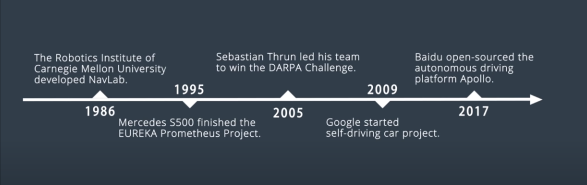
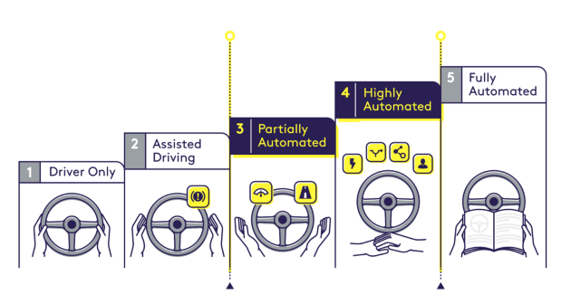

How did we get here?

Image credits to Udacity’s Self-Driving Fundamentals featuring Apollo
As we look at the history of transportation, our human ancestors started to walk and run since 1 million years ago. Though it might sound like a no-brainer, such mode has allowed us to liberate our hands and transport goods (or even other human) from one place to another using our muscle power. We can now walk and text at the same time, maintaining the double pendulum with bent legs for stability.
Since ~4,000 years ago, we had used horse carriage to move people and goods. Humans ride some animals directly, use them for carrying goods, or harness them to pull wheeled vehicles.
The automobile did not come until 135 years ago in late 19th century, with prototypes invented by German men Karl Benz, Gottlieb Daimler, and Nicolaus Otto and a French engineer Emile Levassor.
The idea of self-driving vehicles dates back much further than Google’s research or Tesla’s beta releases in the present day. In fact, the concept of an autonomous car dates back to Futurama, an exhibit at the 1939 New York World’s Fair. General Motors created the exhibit to display its vision of what the world would look like in a couple of decades, and this vision included an automated highway system that would guide self-driving cars.
The Society of Automotive Engineers define the levels of driving autonomy as follows, where current technologies in the industry are still struggling to get to Level 3 or Level 4 perfectly.

| Levels of automation | WHO DOES WHAT, WHEN |
|---|---|
| Level 0 | The human driver does all the driving. |
| Level 1 | An advanced driver assistance system (ADAS) on the vehicle can sometimes assist the human driver with either steering or braking/accelerating, but not both simultaneously. |
| Level 2 | An advanced driver assistance system (ADAS) on the vehicle can itself actually control both steering and braking/accelerating simultaneously under some circumstances. The human driver must continue to pay full attention (“monitor the driving environment”) at all times and perform the rest of the driving task. |
| Level 3 | An automated driving system (ADS) on the vehicle can itself perform all aspects of the driving task under some circumstances. In those circumstances, the human driver must be ready to take back control at any time when the ADS requests the human driver to do so. In all other circumstances, the human driver performs the driving task. |
| Level 4 | An automated driving system (ADS) on the vehicle can itself perform all driving tasks and monitor the driving environment – essentially, do all the driving – in certain circumstances. The human need not pay attention in those circumstances. |
| Level 5 | An automated driving system (ADS) on the vehicle can do all the driving in all circumstances. The human occupants are just passengers and need never be involved in driving. |